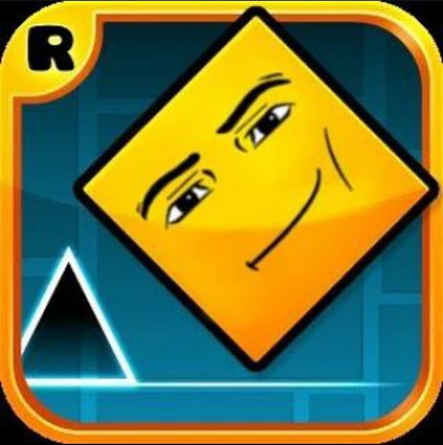

// NOSOTROS
Somos un grupo de amigos y compañeros de ingeniería de software en la CUE AVH. Nos apasiona construir, aprender y compartir: desde bots para Telegram hasta sistemas distribuidos, ciberseguridad y videojuegos creativos.

